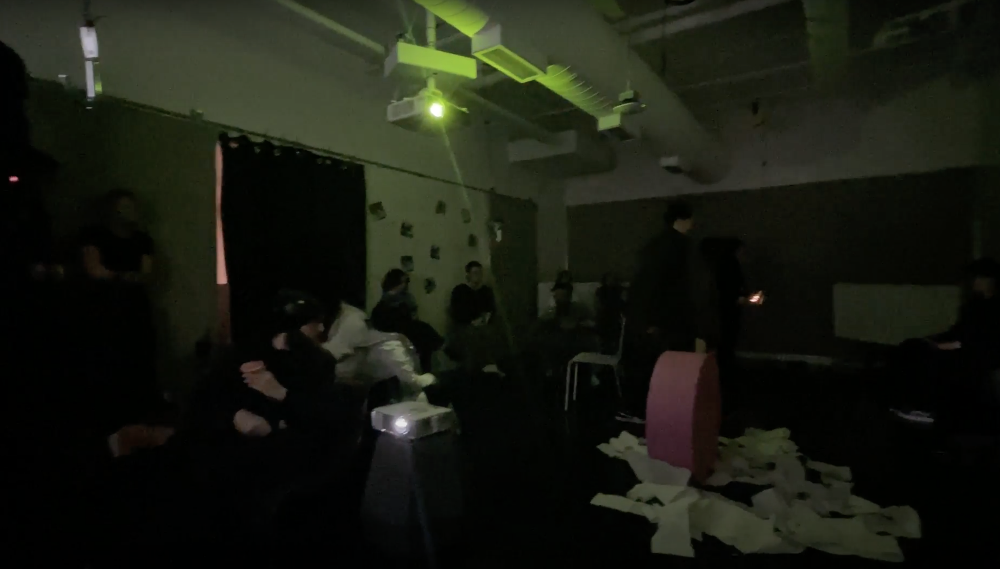
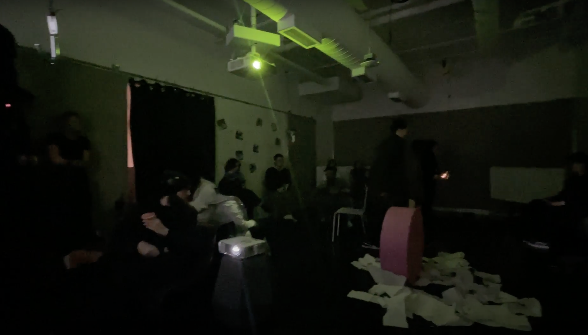

Life is what happens to you when you are buzy making other plans - John Lenon
Repetition and time are two central themes that can be explored in depth within this project.
Repetition is a powerful force in our lives, as we often engage in routine behaviors and
tasks that become so ingrained in our daily habits that we do them without even thinking.
This can be seen in activities such as driving, where we may have driven the same route so many times that we can do it on autopilot,
without even really thinking about it. The memory associated with it is gone forever.
The idea of an eternal waiting room suggests a state of limbo, where time seems to stand still. The repetition of waiting,
without any sense of progress or change.

 
